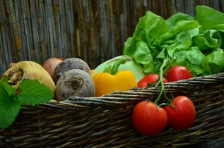
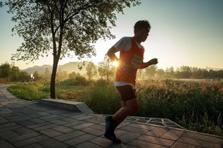
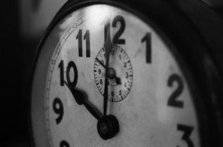

Moniteur d'activités
Bienvenue sur notre outil de suivi d'activités. Visualisez les statistiques sur vos repas, vos activités sportives ou encore sur votre sommeil.
- Nourriture : Suivez vos repas : heure, type, quantité, calories... voir plus
- Sport : Quelles activités avez-vous pratiquées aujourd'hui ? voir plus
- Sommeil : Dormez-vous assez ? Suivez la qualité de votre sommeil. voir plus
- Blog : Où êtes vous allé ? Suivez votre activité en image ! voir plus
Repas de la journée
Petit déjeuner
- Oeufs bacon (25 calories)
- Jus d'orange (5 calories)
- Tranche de brioche (15 calories)
Déjeuner
- Carrotes rapés (35 calories)
- Pizza au chèvre (75 calories)
- Pomme (10 calories)
Dîner
- Soupe d'asperges (20 calories)
- Croque monsieur (55 calories)
- Crème au chocolat (45 calories)
Sport - performances de la semaine
Vélo du 10 mai 2017
- 0Km - 00:00:00 - Brest
- 13.3Km - 00:50:00 - Saint-Renan
- 20.5Km - 01:20:00 - Milizac
- 32Km - 02:00:00 - Brest
Footing du 12 janvier 2017
- 0Km - 00:00:00 - Océanopolis
- 1.7Km - 00:11:00 - Plage du Moulin Blanc
- 4.6Km - 00:29:00 - Vallon du Stang Alar
- 7.3Km - 00:44:00 - Océanopolis
Sommeil - vérifiez votre repos
J - 3
- 4h : Sommeil profond
- 30m : Sommeil léger
- 1h : Sommeil profond
- 30m : Phase de réveil
- 1h : Sommeil léger
J - 2
- 3h30 : Sommeil profond
- 1h : Sommeil léger
- 30m : Phase de réveil
- 1h : Sommeil léger
- 2h30 : Sommeil profond
- 30m : Sommeil léger
J - 1
- 2h : Sommeil léger
- 3h : Phase de réveil
- 2h : Sommeil léger
- 1h : Sommeil profond
Photos - cliquez pour les voir en grand

Premier repas de la journée : Petit déjeuner à base de légumes et fruits frais.

Petit footing du matin : 7km en bord de mer avec un petit vent d'ouest.

La journée qui commence : Réveil à 7h15 de bon pied et en route pour une nouvelle journée bien chargée.
Shooting photos : Pause de midi en campagne pour capturer la nature avec mon appareil.
L'équipe de développement
Tim Berners-Lee : Programmeur HTML
Håkon Wium Lie : Programmeur CSS
Brendan Eich : Programmeur JS
Rasmus Lerdorf : Programmeur PHP
Donald Chamberlin : Programmeur SQL
Contactez-nous